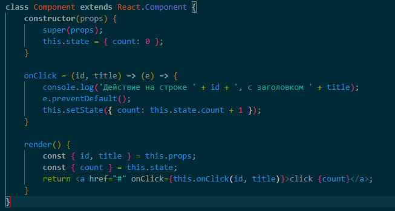

Ответ: Задание атрибута key функцией Math.random() может иметь несколько негативных последствий:
1. Отсутствие уникальности: Функция Math.random() генерирует случайное число, но это число не является гарантированно уникальным для каждого элемента в списке. В результате может произойти дублирование ключей, что может нарушить работу React и привести к непредсказуемому поведению компонента.
2. Потеря состояния: При каждой перерисовке компонента React использует ключи для определения изменений элементов. Если ключи не являются уникальными и стабильными, React может неправильно определить состояние каждого элемента, что приведет к некорректному отображению данных и потере состояния.
3. Производительность: Math.random() является вычислительно затратной функцией, поэтому использование ее для генерации ключей в больших списках может снизить производительность приложения.
Ответ:

Ответ: В отличие от DOM, виртуальный DOM не является официальной спецификацией, а представляет собой новый метод взаимодействия с DOM. Виртуальный DOM может рассматриваться как копия исходного DOM. Этой копией можно часто манипулировать и обновлять, не используя API DOM. После того, как все обновления были внесены в виртуальный DOM, мы можем посмотреть, какие конкретные изменения необходимо внести в исходный DOM, и сделать их целевым и оптимизированным способом. Фактически, виртуальный DOM — это просто обычный объект Javascript.
Ответ: Сообщения в консоли будут выводиться в следующем порядке:
Ответ: Рефы дают возможность получить доступ к DOM-узлам или React-элементам, созданным в рендер-методе. В обычном потоке данных React родительские компоненты могут взаимодействовать с дочерними только через пропсы. Чтобы модифицировать потомка, вы должны заново отрендерить его с новыми пропсами. Тем не менее, могут возникать ситуации, когда вам требуется императивно изменить дочерний элемент, обойдя обычный поток данных. Подлежащий изменениям дочерний элемент может быть как React-компонентом, так и DOM-элементом. React предоставляет лазейку для обоих случаев.
Ситуации, в которых использование рефов является оправданным:
Управление фокусом, выделение текста или воспроизведение медиа.
Императивный вызов анимаций.
Интеграция со сторонними DOM-библиотеками.
Ответ: в React поток данных односторонний и сходит сверху вниз в иерархическом порядке. Обратно только через колбэк функции. Родительский компонент не должен напрямую управлять методами или состоянием дочернего компонента, поскольку это приводит к сложности в отслеживании и понимании потока данных. Вместо этого, Реакт рекомендует использовать передачу пропсов из родительского компонента в дочерний и передавать колбэк функции из дочернего компонента в родительский компонент для обратного вызова.
Ответ: используя только хук useRef передать ref дочерним компонентам нельзя. Для этого используется метод forwardRef, и им оборачивается весь компонент.
Ответ: если нам может понадобится сделать специфический хук с более сложной логикой, который мы не найдём в списке хуков реакта. В таком случае, можно написать его самим, используя хуки из коробки как основу.